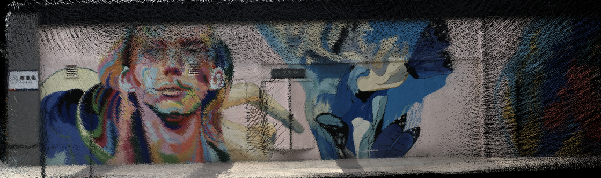

Adaptive state augmentation
During IMU propagation, estimated angular and linear accelerations determine when to insert a pose clone within the image readout.
IEEE Robotics and Automation Letters / 2026
1 Department of Mechanical Engineering, The University of Hong Kong2 Spatial Robotics Limited
This paper presents FAST-LIVO-RS, a rolling-shutter (RS) aware direct LiDAR-inertial-visual odometry system that addresses the row-dependent geometric inconsistency arising when RS images are processed under global-shutter (GS) assumptions. In direct LIVO pipelines, this inconsistency degrades photometric optimization, point-cloud colorization, and robustness under fast motion. To capture intra-frame motion over the RS readout time, FAST-LIVO-RS introduces adaptive state augmentation within a sequential error-state iterated Kalman filter (ESIKF), dynamically inserting clone states during IMU propagation based on estimated angular and linear acceleration to provide a motion-adaptive piecewise-linear trajectory approximation. Building on this representation, a row-consistent direct visual update is formulated through fixed-point row-time projection and Jacobian distribution to clone-segment endpoints, ensuring that each photometric residual is linearized at the correct row-specific camera pose. RS-consistent visual map management keeps patch maintenance and reference-frame updates consistent with row-specific RS geometry rather than single end pose assumptions. We evaluate FAST-LIVO-RS on a self-collected RS dataset and four GrandTour tasks, together with a comparison using synchronized RS and GS cameras and 3D reconstruction. The results show that row-time modeling improves robustness on RS sequences and provides localization and reconstruction quality comparable to FAST-LIVO2 using the synchronized GS camera.
A global shutter exposes all rows at the same time. A rolling shutter exposes them sequentially: in the lower panel of Fig. 2, each row’s exposure window starts later than the one above it. On our two handheld rigs, the first and last rows are 49.6 ms apart. If the camera moves during readout, each row sees the scene from a different pose.
Direct LiDAR–visual alignment uses LiDAR map points as visual anchors. Under fast motion, using one pose for the whole frame can project a map point onto the wrong pixel. The photometric update then compares the brightness of mismatched patches. The same error affects colorization: near a high-contrast edge, the point can take its color from the other side.

During IMU propagation, the system estimates how the camera moves within the frame. Each visual residual is then evaluated at the pose for its own image row, and the same projection is used to maintain visual patches and color the map.

During IMU propagation, estimated angular and linear accelerations determine when to insert a pose clone within the image readout.
Fixed-point projection finds the row-specific camera pose for each residual. Its Jacobian is distributed to the endpoints of the corresponding clone segment.
The same rolling-shutter geometry is used to maintain reference patches, update visual map points and assign RGB to the LiDAR map.


FAST-LIVO-RS uses the estimated rotation at each row to remap the image to the camera pose at the end of readout. This compensates for the shear and skew of vertical structures during rapid rotation.

The paper compares three configurations on six synchronized JT recordings using the same 3DGUT backend. PSNR and SSIM are measured on rendered test views.
| Sequence | FAST-LIVO-RS + RS | FAST-LIVO2 + RS | FAST-LIVO2 + GS |
|---|---|---|---|
| JT-O1 | 25.12 / 0.778 | — | 26.06 / 0.770 |
| JT-O2 | 24.21 / 0.742 | 21.70 / 0.719 | 25.56 / 0.755 |
| JT-O3 | 29.43 / 0.857 | 28.82 / 0.829 | 29.67 / 0.850 |
| JT-I1 | 31.61 / 0.896 | 29.68 / 0.845 | 31.96 / 0.882 |
| JT-M1 | 26.51 / 0.862 | 24.65 / 0.810 | 26.06 / 0.857 |
| JT-M2 | 23.90 / 0.855 | 20.49 / 0.809 | 24.58 / 0.865 |
RS: rolling shutter. GS: global shutter. A dash indicates no valid reconstruction.
@article{zhu2026fastlivors,
author = {Zhu, Haoda and Hong, Xiangyu and Zheng, Chunran and Li, Haotian and Zhang, Fu},
title = {Rolling-Shutter Aware {LiDAR}-Inertial-Visual Odometry},
journal = {IEEE Robotics and Automation Letters},
year = {2026},
volume = {11},
number = {12},
pages = {14652--14659},
doi = {10.1109/LRA.2026.3747596}
}